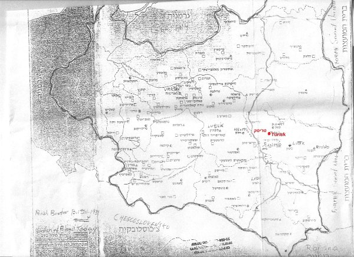
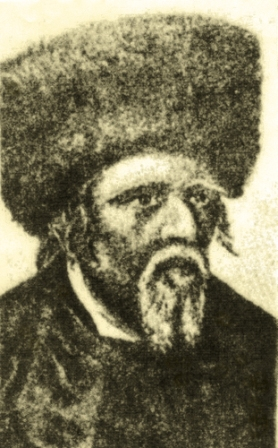

העיירה טריסק ( ביידיש) טוריסק (באוקראינית) טוז'יסק (בפולנית) שוכנת במחוז ווהלין השתייכה בין שתי מלחמות העולם לפולין, היום אוקראינה. מיקומה על גדות הנהר טוריה,יובל הנהר 'פריפטש'. בין העיר קובל לבין העיר לודמיר. (ולדימיר ווהלינסק העיר קיימת מסוף המאה ה-11.) מרשומות רשמיים ידוע כי בשנת1097 נדרשו תושביה ע'י הנסיכים וולודר וואסילקה להסגיר את האשמים בגרימת עיוורון לנסיך וואסילקה. בשנת 1205 כבשו את העיירה הליטאים. בשנת 1515 העניק המלך זיגיסמונד הראשון את טריסק לנסיך טנגושקה. בשנת 1759 העניק המלך אוגוסט ה-3 לטריסק זכויות חוקת מגדבורג. במאה ה-16 נבנו במרכז העיירה כנסיות- קתולית ופרבוסלאבית באותה מאה נבנה בית הכנסת היהודי הגדול . לפי ארכיון מפקד האוכלוסין משנת 1765 חיו בטריסק 874 יהודים. בשנת 1847 חיו בעיר 1062 יהודים בשנת 1897 חיו בעיר 2938 תושבים מהם כ-2000 יהודים בין שתי מלחמות העולם חיו בטריסק מעל 5000 יהודים. על אי – גבעה בהסתעפות נהר 'הטוריה' נמצאות חורבות גדולות של מבצר עתיק. דרך צרה הובילה מהעיירה עד לנהר שם עדייו נותרו שרידי גשר מתרומם. בשנת 1890 מצאו במרתפי המבצר אוצר גדול של מטבעות זהב. במרחק קטן מהעיירה תחנת רכבת מקייב ללודמיר. בעיירה היו: בית חרושת לפרוות, ביח'ר ללבנים, שלושה בתי ספר עממיים בי'ס תיכון,בית תרבות,ספריה. המקור: האנציקלופדיה היהודית ברוסית,בהוצאת ל. כצנלסון 1908 מקורות נוספים: האנציקלופדיה הגדולה הסובייטית,מוסקבה 1956 . המילון האנציקלופדי(רוסית) בהוצאת ברוקהאוז והאן ס. פטרבורג 1902 .
מפות של מחוז ווהלין

תולדות העיירה
מאז היווסדה הייתה טריסק עיירה יהודית. תושביה שומרי מסורת אדוקים. רישומים בארכיונים מצביעים על חיי קהילה פעילה ומוסדות קהילתיים מסודרים.
נוסדה על ידי עדת יהודים ב-1094 וכבר מתחילת המאה ה-12 הוקם בה בית- קברות יהודי ששרידיו נמצאו בתחילת המאה ה -20 .
ביער סמוך, נצפו באתר ראשי מאות מצבות מעל פני הקרקע (אדמת סחף). בקרב האוכלוסייה המקומית רווחו אמונות על שדים ורוחות ששוכנים במקום ולא העיזו להתקרב לאזור.
לא כן סברו בני נוער יהודיים (מהשומר הצעיר)בשנות ה30. בהיותם במחנה קיץ ביער באזור, העזו לגרוף את האדמה מסביב למספר מצבות ולעיניהם נגלו כתובות בעברית ותאריכים משנות המאה ה-12, תבליטי שופרות ושיירי פסוקים "אכולים." מעשה זה נשמר בסוד, מפחד אנשי הקהילה האדוקים. מאות שנים קימה הקהילה את תפילותיה בחדרי תפילה ארעיים. היו סידורי "עזרה הדדית," "חברה קדישא" וחדרים ללימוד תורה ותפילה. ושוב אנו מוצאים בכתובים עדות לפניית אנשי הקהילה לנסיך של 'קייב' בבקשה להרשות בניית בית-כנסת מרכזי, בתמורה לתשלום 22 ככרות זהב.
אכן יהודי טריסק מאמינים ואדוקים היו, אך כנראה גם אמידים. ובפנקס הקהילה של טריסק, העתיק והענק, סופר: "כאשר נאספו המעות, הוחל בבניה. היסודות נבנו מלבנים שרופות בעומק , מעל ארבע עשרה אמות באדמה. רוחבם אחד עשרה אמות.
עם תום בנית היסודות, הוזמן הפריץ, בעל האדמות, לחנוך אותם, בנוכחות כל יהודי העיירה , הוא הגיע בכרכרה רתומה לארבעה סוסים אבירים, עלה על היסודות ועשה שבעה סיבובים עליהם. כך ניתן האישור להמשך הבנייה" .
זהו דבר המעשה, כפי שנכתב בכתב יד בפנקס הקהילה הקדושה טריסק, שהיה שמור בארונו של אבי, ששימש ראש קהילה ונבחר לתפקיד שלוש פעמים.
האזור נכבש פעמים רבות על ידי צבאות וכנופיות שונים. חלק מבתיה חרבו, רבים מיהודיה נפגעו,אך תמיד חזרו ובנו מחדש. ואז באו ימי "תחום המושב". איסור מוחלט ליהודים לעזוב את האזור, כלכלות אזורי תחום המושב במערב רוסיה ואוקראינה נפגעו קשות, נפגעה גם כול האוכלוסייה.
האנטישמיות גברה, פרעות ושחיטות היו תופעה קבועה באזור. אמונות "משיחיות " שונות נפוצו בקרב היהודים. קמה והתפתחה התנועה החסידית. התגברה האמונה, החרדות נפוצה.
גם על טריסק לא פסח המשבר הכלכלי. בתחילת המאה ה18 הגיע לעיירה רבי אברהם טברסקי, אחד משמונת בניו של רבי מוטל'ה מצ'רנוביל, וקבע את מושבו ומקום חצרו בטריסק. בניית ה"חצר" הפכה את טריסק למרכז חסידי גדול. עשרות אלפי חסידים מכל רחבי אוקראינה נהרו והפיחו בעירה חיים ופרנסה.
יחד עם זאת גדלה מאד ההתחרדות ונמנעה חדירת רעיונות ודעות מודרניות, לקראת המחצית השנייה של המאה ה-19 עם יציאתם של צעירים מטריסק ללימודים בישיבות בערים הגדולות יותר, הורגש שינוי באווירה. רוח ההשכלה חדרה לישיבות הגדולות ,ואף צעירי טריסק נדבקו בה. אחדים הצטרפו בסתר לחוגים של"חובבי ציון" ובשובם לעיירה עשו נפשות לרעיון בקרב צעירי העיירה. לא קלה הייתה דרכם של צעירים אלה. עד מהרה רבו חובבי ציון בקרב הצעירים, קשה היה להסתיר את הפעילות השקטה.
בסוף המאה ה-19 ותחילת המאה ה-20 החלה התארגנות ציונית בין הצעירים ואף פדו את השקל, לקראת הקונגרס הציוני.
חרף ההתנגדות העזה הוקם "חידר" מודרני בו לימדו, חוץ מתורה ותפילה, גם מתמטיקה, יידיש ועברית.
במלחמת העולם הראשונה נכבשה טריסק בידי הגרמנים. זמנים קשים פקדו את התושבים היהודיים, הכלכלה נפגעה קשה, רבים הגיעו לחרפת רעב. הרבי מטריסק וכל אנשי חצרו עזבו את העיירה מזרחה.
עם תחילת המאה העשרים חזרו מספר בחורי ישיבה לעיירה חדורי רעיונות חדשים.
ריכזו סביבם עשרות צעירים וצעירות וקיימו פעילות כדוגמת 'חובבי ציון' בערים הגדולות. התקיימו הרצאות ודיונים, הובאו בחשאי ספרים בעברית וביידיש ובסוף המלחמה הקימו בית-ספר שעברית ויידיש שמשו בו כשפות הלימוד. עם תחילת השלטון הפולני, בשנות העשרים הראשונות, חברו והקימו ספריה, רוב ספריה ביידיש נאספו מכל בתי העיירה. החלה "החלפת ספרים" שגרתית והוקמו ועדים שריכזו את הפעילות.
בשנים הראשונות, נתקלה פעילות זו בהתנגדות חריפה של החלק החרדי בעיירה, שנקט צעדים להפסקתה.
להרחבת הפעילות הציונית תרמה החלטת התנועה החלוצית להקים "קבוצת הכשרה" בקרבת טריסק שעסקה בעיקר בכריתת יערות בסביבה ועבודה במנסרות. בהשפעת הפעילות הזו ובהשפעת הידיעות על הגנת "תל-חי" נוסדה תנועת "השומר- טרומפלדור." חבריה התחברו לקבוצת ההכשרה וקיימו פעילות ציונית נמרצת.
עד מהרה הוקמה תנועת בוגרים "החלוץ", התחילה פעילות ציונית ענפה. חברי החלוץ יצאו להכשרה לעיירה קלוסובה, שם הועסקו בחציבת אבן בזלת במחצבה, שבעליה היהודי הסכים להעסיק חלוצים בצד אסירי שלטון. העבודה, הייתה קשה ביותר וזרה לצעירי העיירה בכלל, ולצעירים יהודיים בפרט. לראשונה ובאופן חריג, הצטרפו בנות מהעיירה להכשרה, זאת בניגוד לדעת הוריהן ודעת הקהל בעיירה.
במחצבה אף קרו אסונות ואנשי הכשרה אחדים נספו. עובדה זו לא ריפתה את ידם, קלוסובה הפכה לסמל ההחלטיות של אנשי החלוץ ולחתירתם העקשנית לעליה.
כדי להעמיק את התודעה הציונית והחינוך לציון, הוחלט להפסיק בבית-הספר את לימוד היידיש ולהצטרף לרשת בתי ספר "תרבות." כתגובה לכך פרשו חלק מהמורים והפעילים והקימו בית-ספר מתחרה, ששפת ההוראה שלו יידיש. בעקבות כך החליטו הציונים להקים ספריה עברית, ספרים רבים נאספו מהבתים, אך נדרשה פעילות נמרצת לגיוס מימון לרכישת ספרים בחוץ. במסירות אין קץ נאספו הכספים, הוקם ועד ספריה. והיא החלה לפעול.
גאווה גדולה הפיחה הספרייה בקרב הציונים בעיירה, והם טיפחוה והרחיבוה כל השנים.
זכתה טריסק וראשוני החלוצים התכוננו לעליה ארצה.
כולם התגייסו לעזור לממש את העלייה. לא לכולם היו האמצעים לכך ונעשתה פעילות רבה לקבץ את הסכום הדרוש. וביום צאת הראשונים לדרך ליוו אותם לרכבת מאות חברים ואוהדים ואף ילדי הכתות הגבוהות. יום חג היה בעיירה.
הקמת קן השומר הצעיר בטריסק והשפעתו על חיי העיירה והנוער במיוחד.
אחדים מבין בוגרי בית-הספר "תרבות" יצאו להמשך לימודיהם בגימנסיה "תרבות" בעיר הסמוכה "קובל".שם הושפעו מהרעיונות של תנועות הנוער הציוני הצטרפו ונעשו פעילים בתנועת "השומר הצעיר".
בשנת 1927 נוסדה התנועה בטריסק ונסמכה על כיתות בית הספר תרבות. בעזרת הנהגת קן השומר הצעיר מ"קובל".
הגימנזיסטים קיימו סמינר לבוגרי הקן להכשירם כמדריכים לשכבות הצעירות. נעשתה פעילות ענפה לאיסוף כספים למעון לקן, והוא היה לבית גם לסניף "החלוץ".
הייתה פעילות חינוכית תנועתית בהדרכת ההנהגה המחוזית והראשית בוורשה.
הקן חולק לשכבות גיל שונות(לעיתים חפפו את הכיתות בבית הספר "תרבות").אחרי שעות הלימודים התקיימו פעילויות חינוכיות-תרבותיות בקבוצות ובשכבות ובימי חג ומועד לאומיים או מסורתיים פעולות משותפות לכל בני הקן. .
הפעילות החינוכית תרבותית בקן נעשתה לפי תוכנית מוכנה והותאמה לכל שכבת גיל.
התקיימו דיונים בנושאים אקטואליים ובנושאים היסטוריים לאומיים נערכו "משפטים ציבוריים" אשר ריכזו וריתקו את מרבית הנוער בעיירה ולעיתים הגיעו גם לא מעט מבוגרים הורי החניכים. התקיימו סמינרים רעיוניים אזוריים בהם השתתפו רבים מהחניכים.
עבודה רבה נעשתה בקרב הורי החניכים, שכולם מסורתיים ולעיתים דתיים מאד, לשכנע אותם לאפשר לבנות ולבנים לצאת לאזור רחוק, בנות יחד עם בנים, לכנסים וסמינרים, אף כי הקבוצות החינוכיות היו נפרדות לבנים ובנות. הקן הפך לבית שני לחניכים ומסירותם לפעילות לא ידעה גבול.
לא פעם גרם הדבר לחיכוכים עם הורים, אך רובם העריכו ואף תמכו בפעילות התנועה..
מספר פעמים בשנה הוכנו הצגות תיאטרון שזכו לאולמות מלאים.
לעיתים קרובות הוזמנו מרצים מחוץ לעיירה , סופרים או אנשי תרבות או פוליטיקאים, אשר רכזו המונים להרצאה ודיון.
הקן שחינך את חניכיו "להגשמה עצמית" בגר וראשוני בוגריו, שהיוו את עמוד השדרה הניהולי והחינוכי בקן, החליטו לצאת להכשרה!
נערכו חילופי משמרות והשכבה הבוגרת אחריה, קבלה את ההדרכה וניהול הקן. השכבות הצעירות לא השלימו עם צאת המדריכים האהובים להכשרה. אך קבלו את צו התנועה. אחרי חלוצי קלוסובה, הייתה זו הקבוצה השנייה מהעיירה שיצאה להכשרה והקימה את קבוץ ההכשרה "עמל" בעיר התעשייה ביאליסטוק. התחילו הכנות לעליה. ובארץ הקימו את קבוץ "רוחמה" בנגב!
כעבור שנה גם שכבת המדריכים החלה בהכנות ליציאה להכשרה. התקיים כנוס מייסד אזורי, בו השתתפו מאות ובו הוקם גרעין ההכשרה בשם "הזרם".
בסוף 1938 יצאו ראשוני הגרעין לביאליסטוק והחלו בתהליך ההכשרה וההכנה לעליה. בתחילת 1939 עלו ראשוני הקבוץ לארץ ולימים הקימו את קבוץ "המעפיל" בעמק חפר. שמי אירופה קדרו מאד, ושכבת בוגרים חדשה החלה בהכנות ליציאה להכשרה, נערך כנס יסוד אזורי והוכרז על הקמת גרעין הכשרה שלישי בשם "הכובש".
באמצע הקיץ יצאו ראשוני הגרעין לביאליסטוק ויסדו את הקבוץ. לא העיר המזל לקבוץ הכובש, הנאצים פתחו במלחמה להשמדתה של פולין, ובהסכם עם רוסיה הסובייטית נחלקה פולין ביניהם.
התנועה יעצה לבוגריה לנוע לאזור שנתפס בידי הסובייטים, והמוני בוגרי השוה'צ יצאו לאזור. טריסק זכתה להפתעה מצילת חיים, הצבא האדום נכנס לעיירה ביום של ערב יום הכיפורים. וגרם ליהודים לנשום לרווחה.
אך לא זמן רב ארכו הימים הטובים, השלטונות הסובייטיים פקדו לסגור את בית ספר "תרבות" ה"אנטי סובייטי",בעקבותיו נעלו את שערי הספרייה העברית "כריאקציונית" הציונים הוזהרו 'הצעירים נקראו להצטרף לתנועת ה"קומסומול" חלק מהם עזבו בתיהם מחשש להיעצר.
התחילה פעולה להצלת ספרים עבריים, התנועה באזור הסובייטי התארגנה במחתרת, אחרי זמן קצר יעצה התנועה לבוגריה לנוע לכיוון הגבול החדש של רוסיה-ליטא, בתקווה שמשם אולי תתאפשר עליה. גם חלק מבוגרי הקן בטריסק (תשעה במספר) יצאו בחשאי לכיוון וילנה שבליטא. כולם זכו להגיע לארץ ישראל. עם הכיבוש הנאצי של טריסק ביוני 1942 הוכנעו יהודיה ולא יכלו לשרוד!
הקיץ הקץ על העיירה ועל יהודי טריסק, על תרבותם על מפעליהם ועל הנוער הנפלא שבה.
חיי הקהילה
העיירה טריסק נוסדה עי' יהודים בשנת 1094 ' על גדות הנהר טוריה. תושביה שברובם יהודים היו, עסקו בביעור היערות ותעשיית העץ.
הקהילה גדלה מאד, לימים נמצא בית- קברות עתיק ובו מצבות מהמאה ה-12. לפי מקורות ארכיונים נכבשה טריסק בידי חמש מדינות מהאזור, נהרסה בחלקה, אך היהודים המשיכו לפתח את המסחר והמלאכה והתעשייה.
במאה ה-16 התבססה הקהילה, נבנה בית- הכנסת הגדול, אך אז באו חוקי "תחום המושב", כלכלת האזור נפגעה באופן קשה מאד ופגעה באוכלוסיה היהודית, גדל העוני, גדלה האנטישמיות. פרעות ביהודים היו לתופעה נפוצה, גם על טריסק לא פסח המשבר.
בקרב היהודים נפוצו אמונות משיחיות, המצוקה גרמה לכך שקמו נביאי שקר, קמה והתפתחה התנועה החסידית, רבים נהו אחרי הרבנים.
בתחילת המאה ה-18 היגיע לעיירה רבי אברהם טברסקי, מחסידות צ'רנוביל שקבע את טריסק למקום מושבו והקים בה את חצרו החסידית. בניית החצר הגדולה הביאה פרנסה לרבים מיהודי טריסק. מכול רחבי אוקראינה ופולין נהרו חסידים לפתחו.
תלמיד חכם היה ופרשן ידוע. ספרו "מגן אברהם" היה לספר לימוד בישיבות ובתי המדרש ומשמש עד היום! בתחילת המאה ה-19 חדרה רוח ההשכלה לעיירה, זאת בזכות נערים מהעיירה שיצאו ללמוד בישיבות בערים הגדולות.
בשובם ריכזו סביבם צעירים רבים, והקימו חוגים ציוניים. בתחילת מלחמת העולם הראשונה כבש הצבא הגרמני את העיירה. טריסק הייתה סגורה, כלכלתה נפגעה, רבים הגיעו לסף רעב. הרבי וכל אנשי חצרו עזבו מזרחה. כאמור צעירים רבים נהו אחרי הרעיון הציוני וההשכלה. הוקם "חדר" מודרני בו לימדו בו לימדו גם שפת עברית ויידיש.
הוקמה ספריה עברית שרוב ספריה נאספו מבתי החברים. לקראת סוף הוקם בית ספר יהודי פרטי בו שפת ההוראה היו עברית ויידיש וגם מתמטיקה. הייתה התנגדות רבה בקרב האורתודוקסים ,אך למרות זאת ההתקדמות נמשכה!
זמן קצר אחר כך צרפו מורים ציוניים את בית-הספר לרשת "תרבות" ששפת ההוראה בו רק עברית. כתגובה לכך פרשו מספר מורים בראשותו של הסופר לייב אוליצקי והקימו בית ספר ששפת ההוראה בו יידיש.
העיירה התפלגה לשני מחנות עיקריים: ציונים ובונדיסטים. בעיירה הוקם סניף "השומר" ובעקבותיו סניף החלוץ. הבוגרים מבין הצעירים יצאו להכשרה במחצבות האבן בקלוסובה.
נקודת הכשרה הוקמה, במנסרת עצים על יד העיירה, והשפעתה על הצעירים רבה מאד. התחילו להתכונן לעליה לארץ ישראל. במקביל הצטרף בית הספר ביידיש לרשת בתי הספר של ה בונד. צישא". מלחמה אידיאולוגית חריפה התנהלה ביו שני המחנות. יש לציין ולהדגיש , בית הספר ששפת ההוראה בו יידיש היה הראשון שהוקם בין כול 44 הערים והעיירות היהודיות בווהלין. השפעתו רבתה גם בעיירות שכנות, בוגריו בין הסופרים והמשוררים בשפת היידיש הבולטים, שיצאו שיצאו לערים הגדולות בפולין ואמריקה. בשנת 1927 הוקמה בטריסק תנועת נוער "השומר הצעיר". מייסדיה היו תלמידי הגמנסיה העברית בקובל הסמוכה. בוגריה יצאו לקיבוצי ההכשרה בעיר ביאליסטוק והתחילו לעלות ארצה. הקן התבסס על הכיתות הגבוהות בבית הספר"תרבות". בוגרי הקן נענו לצו ההגשמה העצמית. אחדים נקראו לפעילות של ההנהגה הראשית. אחד מהם, ישעיהו - שייקה ויינר, אף היה בין ראשי התנועה בפולין בשנת 1939. שייקה נבחר כציר מטעם התנועה לקונגרס, שהתכנס בבזל-שווייץ, ימים אחדים לפני פרוץ מלחמת העולם השנייה. טריסק היהודית התפרסמה בזכות מספר כמה אישים וארועים:
- בתחילת המאה ה-18 חי ופעל בה הרופא דר" משה מרקוזי, אידיאליסט, איש ההשכלה, בהתנדבות לטובת ולעזרת דלת- העם ,טיפל בהם, ובמשך עשרות שנים ערך מחקר מדעי על בריאות , היגיינה ומחלות שלהם. בשנת 1770 פרסם ספר רפואה, לשימוש להמונים, ביידיש, הראשון מסוגו והיחיד עד היום.!
- בתחילת המאה ה-18 הקים בה רבי אברהמ'לה טברסקי את החצר החסידית והשושלת החסידית של טריסק פרחה ושמה יצא לתהילה ברחבי אוקראינה ופולין, אף לארצות חוץ.
- חלקם שרדו את מלחמת העולם השנייה ופעילים עד היום. גם בירושלים.
- קרקע העיירה הקטנה טריסק הצמיחה מקרבה עשרה יוצרים, סופרים ומשוררים ידועי שם בכל העולם היהודי.
- שניים מבניה הגיעו לרמה של מנהיגים בתנועותיהם: השומר הצעיר, והבונד. ישעיהו ויינר (שייקה) בהנהגת השוה'צ ,היה ממובילי העלייה לפני המלחמה ואחריה. היה ציר השוה'צ לקונגרס הציוני 1939.
- ליבר ברנר, ממנהיגי הבונד באזורינו, ממנהיגי מרד גיטו צנסטוכובה, ששרד, ופרסם מחקר בנושא: "ההתחרות" התרבותית האידיאולוגית בין שני המחנות שהעלתה את רמתה של טריסק בעיני יהודי האזור.
אודות חיי הקהילה היהודית בטריסק
מאז ייסודה בשנת 1097 עד שנת השמדתה בשנת 1942 היהודים הקימו ופיתחו את העיירה. היערות סביבה נעקרו, מנסרות רבות הוקמו ויצרו מוצרי בנייה וקורות לתעשייה שהושטו בשיירות של רפסודות אין קץ בנהר 'טוריה' עד לנמלי הים והתעשייה. התעשייה והמסחר פרחו.
אומנים ועובדים יהודים הקימו בתי מלאכה מכל הסוגים. האוכלוסייה היהודית גדלה מאד. באמצע המאה ה16 נבנה בית כנסת גדול וישיבה על ידו. חיי הדת והתרבות שגשגו. טריסק נכבשה מספר פעמים על ידי כובשים שונים, חלקים גדולים נהרסו וניבנו מחדש. היהודים סבלו מנגישות ואבידות רבות, אך תמיד חזרו לבנות מחדש..
בתחילת המאה ה-18 הפכה טריסק למרכז חסידי חשוב, כאשר רבי אברהם טברסקי בנו של המגיד מרדכי מצ'רנוביל הפך את טריסק למרכז שלו. מאז ועד להתחלת המאה ה-20 הרבנים מטריסק התפרסמו בכל פולין ואיזור המזרח! קמו לחצר מאות אלפי מעריצים במאות עיירות וערים ואף לאמריקה הרחוקה הגיעו. מידי שנה, ביום הזיכרון לזכרו של אברהמל'ה המגיד מטריסק, אלפים רבים של חסידים ובראשם האדמו"רים היו ממלאים את העיירה על גדותיה. מבקשי עזרה והחלמה ממחלות ,בהאמינם בכוחותיו "האל טבעיים" של המגיד.
גלי ההשכלה של המאה ה-19 שטפו את העיירה בימי סוף המאה. ליד ה'חדר' המודרני הוקם בית ספר עברי, וספריה בשפות יידיש ועברית. קבוצת צעירים הקימו תנועת נוער ציונית, וגבר חלומם לעלות לארץ ישראל.
צעירים רבים החלו בלימודים גבוהים, תוך זמן קצר הוברר שמצויים ביניהם בעלי כישרונות בתחומי התרבות והספרות. יצירותיהם פורסמו בירחונים ספרותיים ביידיש ובעברית. אחדים התפרסמו בעולם היהודי. בזמן מלחמת העולם הראשונה נכבשה טריסק בידי הצבא הגרמני וסבל רב נגרם לתושביה היהודיים בגלל המצב הכלכלי הקשה. בפעולות מלחמתיות נשרפה החצר הענקית של הרבי כליל.
הוא היה אחרון השושלת של המגיד שחצרו היתה בטריסק, ולא נבנתה מחדש יותר! עם סיום המלחמה צורפה מערב אוקראינה וטריסק בתוכה, לפולין. קשה הייתה התאוששות הקהילה מכל המכות שהוכתה בהן ומהן סבלה, אך חיי החברה, התרבות והחיים הפוליטיים הלכו והתפתחו. אנשי הבונד בעיירה הקימו בית ספר נפרד אשר שפת הלימוד בו יידיש בכל הכיתות. היה זה בית הספר הראשון מסוגו וכמעט היחיד בכל ערי ועיירות היהודיות בפולין המזרחית 44 במספר. (אוקראינה) יש לציין : בטריסק נולדו, צמחו ויצרו תשעה סופרים ומשוררים בשפות יידיש ועברית, רובם צמחו והיו לבעלי שעור קומה ספרותיים בעולם הספרות היהודי והכללי. צעירי תנועות הנוער השומר הצעיר והבונד היו מודעים לסכנות של פוגרומים מצד אוכלוסיית הפרוורים והכפרים האוקראיניים. מרכזי התנועות בפולין קיימו אימוני נשק חשאיים, כהכנה להתמודדות עם הפורעים ובתנועת השוה"צ גם כהכנה לעליה לארץ ישראל.
טריסק בימי שלוט הפולנים לא התאוששה כלכלית. רוב תושביה שיהודים היו, התקשו להרוויח למחייתם ורבים חיפשו דרכים להגירה. בסיסה החברתי התרבותי והחינוכי האיתן, מנעו ייאוש, הפעילות האקטיבית נמשכה בכל המחנות. תנועות השוה"צ ,החלוץ והציונים בכלל פעלו להגירתם לארץ ישראל של חבריהם ובני משפחתם.
אנשי הבונד , המפלגה הקומוניסטית במחתרת, ואנשי הרבנות האורתודוקסית פעלו למניעת יציאתם של צעירים מפולין, מתוך אמונתם באחווה בין העמים מחד וצפייה לבוא המשיח מצד אנשי הדת.
כזה היה המצב עם פרוץ מלחמת העולם השנייה. כתוצאה מהסכם גרמניה - רוסיה הסובייטית, נכבשה מערב פולין בידי גרמניה ומזרחה בידי ברית המועצות. זמן קצר בלבד היו יהודי מזרח פולין אזרחי ברית המועצות, אך על פעילות הציונים הוטל איסור. חלק מפעילי הנהגת התנועה נאסרו או היו צפויים למאסר, חלק קטן של האקטיבה התנועתית הצליחה להימלט לליטא החופשית,ומשם המשיכו במאמצים לעלות ארצה. רק למעטים בלבד הצליח המאמץ.
כאשר תקפה גרמניה את ברית המועצות ב-22 ביוני 1941 לא רבים הצליחו להימלט לרוסיה בעקבות נסיגתו של הצבא האדום, רובם שרדו את המלחמה ברוסיה. תוך שני ימי לחימה כבשו הגרמנים את טריסק. כבר באותו יום החלו בהתעללויות והוצאות להורג. האוכלוסייה היהודית נדחסה בחלק קטן מבתי העיירה,עשרה אנשים בחדר, בלי אפשרות כלשהי לשכב או לישון, בתנאים סניטריים חמורים ביותר! החלו בהוצאת גזירות .
גזירה רדפה גזירה בלי אפשרות לעקוב. היהודים אולצו להקים ועד אשר יהיה אחראי על ביצוע הגזרות, גיוס אנשים לעבודות פרך מחוץ לגטו, וכל יום פחת מספר החוזרים לגטו, איש לא ידע מה גורלם? החרמת רכוש מכל הסוגים: פרוות ובגדים חמים לצבא הגרמני בחזית, איסוף קילוגרמים רבים של כלי זהב וכסף, באיום שאי-מלוי המכסה יגרום להוצאתם להורג של עשרות תושבים. אחרי שנה וחצי של התעללויות והרג רעב והשפלות, היגיע היום מפניו חרדו. כל תושבי הגטו נצטוו להתאסף בבית הכנסת הגדול ועל המגרש הענק מסביבו. המיליציה האוקראינית ירתה בלי הבחנה כדי לאלץ את ההמון להתחיל בצעידה ברחובה הראשי של העירה לכיוון בורות הענק של כריית החומר לבית החרושת ללבנים. כל הדרך התעללו וירו בהם.
כאשר הגיעו לבור נצטוו להתפשט על שפת הבורות, שם ירו בהם והם נפלו לבורות. את ההרג ביצעה המיליציה האוקראינית בפיקוח מספר קצינים גרמניים. כל היום נמשך ההרג עד הערב.
המוני אוקראינים מהכפרים בסביבה נהרו לגטו הריק במטרה לבזוז את הרכוש שהשאירו היהודים. עדי ראייה סיפרו: "בבתי הגטו הסתתרו מספר לא ידוע של צעירים שפתחו באש על המוני הפורעים, רבים נפגעו, הם נסו והזעיקו את המיליציה האוקראינית. כאשר אנשי המיליציה החלו לתקוף את הבתים מהם ירו, פרצה לפתע אש בהרבה בתים, המבנים שרובם בתי עץ היו, עלו בלהבות ותוך זמן קצר עלתה כול העיירה באש. כול העיירה נשרפה עד היסוד, רק כבישי הרחובות נשארו... זה היה סופה של טוריסק בת כמעט 900 שנה. רק שמוליק בוימל בן ה-13 שרד . כאשר התקרב עם אימו ואחיותיו ערומים לבור, שניות לפני הירי, דחפה אותו אימו בצעקה, ברח שמואילקל ברח! הוא נפל ליד הבור וראה את אימו ואחיותיו נורות לתוך הבור.
כאשר התעורר שרר חושך, מצא ערימת בגדים וברח למקום האפל ביותר ליער. הישרדותו של שמואליק הוא סיפור לא ייאמן! כאשר הסתימה המלחמה הוא פגש נערה צעירה שאף היא שרדה בנס את השחיטה בעיירה שלה. הם נישאו ואחרי תלאות היגרו לארה'ב. הם פתחו עסק, והקימו משפחה יהודית נהדרת. בעבודה קשה של שנים נהיה אדם אמיד ובעל יכולת, אך אף פעם לא שכח מוצאו. עם חלוף הזמן היו לאחת ממשפחות התורמים הגדולים למדינת ישראל ולקהילה בארה'ב. אנו יוצאי טריסק בישראל לא היינו מודעים לכך.
בשנת 1992 כאשר גורבצ'וב עלה לשלטון ברוסיה, אספנו, אנו יוצאי טריסק בישראל כסף כדי להקים מצבה על קבר ההמונים בטריסק. כאשר באנו למקום נדהמנו לראות את מצבו של הקבר והחלטנו לפעול בקשר לכך. שמועות שהתהלכו בקרב האוקראינים סיפרו על נער יהודי שברח מהבור, ניצל, היגיע לארה'ב והיום הוא בעל יכולת. בשובנו לישראל בדקנו את נכונות השמועה. הוברר שאכן נכון הדבר, פנינו למר סם בוימל וסיפרנו לו על מה שראו עינינו. בעזרתם של שני אחים יהודים מהאזור הוכנה תכנית. מר סם בוימל תרם את הסכום הדרוש והפרויקט יצא לדרך.
כעבור מספר חודשים הושלמה המלאכה. יצאנו 12 ישראלים אבות יוצאי טריסק עם בניהם ובנותיהם. מארה'ב הצטרפו הזוג בוימל עם בנם, ובני משפחה נוספים. נערך טכס גילוי הלוט.
היה ביקור מאד טעון וקשה בעיקר למר סם בוימל. בזמן הסיור שוחחנו רבות על בעייתיות של הביקורים על יד הקבר. הועלה רעיון של הקמת אתר זיכרון לעיירה בישראל, מקום אליו יוכלו להגיע בקלות בנים ובני בנים של יוצאי העיירה וללמוד להכיר את השורשים והמקורות מהם באו.
ללמוד על העיירה, יהודיה, תרבותה, חיי החברה שלהם וכו'. בשובנו לישראל נודע לנו על פרוייקט חדש שמורשת מקימה. מוזיאון על שם מרדכי אנילייביץ מרכז לחקר ולהנצחת המרד בגיטאות . תצוגות הקבע ינציחו את פעולותיהן של תנועות הנוער היהודיות בזמן השואה, יחקרו ויונצחו השורשים מהם צמחו ומהן ינקו, ממאות העיירות והערים בהם חיו קהילות יהודיות במשך מאות שנים.
עיירתנו טריסק וההיסטוריה המיוחדת שלה, בת כ-900 שנה נבחרה כסמל העירות. סמל חשוב, לחיי הקהילות, הדת, התרבות והיצירתיות של מייסדיה היהודים. ייחודה של טריסק בולטת בקרב עיירות פולין , אוקראינה, שהיו הקרקע והמקור מהם צמחו וגדלו יוזמי ומוליכי ההתנגדות והמרד בגיטאות. סם בוימל הרים תרומה מרכזית , אליה הצטרפו אחרים.
הבניין מוכן, כעת אנו פועלים למלא את המבנה בתוכן מתאים. אנו פונים לכל ייוצאי טריסק וצאצאיהם לעזור לסיים את מלאכת הקמת הפרוייקט, שחשיבותו רבה מאד לנו ולדורות הבאים.
השושלת החסידית של טריסק
 השורש ומקור השושלת החסידית של טריסק, בחסידות הצ'רנובילית המכובדת . רבי מרדכי,המכונה בחיבה , רבי מוטל'ה, בנו של מיסד השושלת המגיד ר' נחום מצ'רנוביל העלה מאד את קרנה של השושלת, בימיו היא פרחה. עשרות אלפי חסידים מרוסיה ואוקראינה, נהרו לצ'רנוביל לשמוע אותו ולקבל בירכתו. כך קמה שושלת משפחת טברסקי.
לרבי מוטל'ה נולדו שמונה בנים. כאשר ניפטר, חילקו ביניהם בניו את כל פלך קייב ופלך ווהלין. כל אחד מהם הקים חצר חסידית ומשל בה. באזור טריסק זכה ר' אברהמל'ה.לימים, המגיד מטריסק. מבין הערים הגדולות יותר שבקרבתה,קובל, לודמיר ומצ'ייב, בחר בטריסק השוכנת במרכזן.על גדות הנהר טוריה. עד מהרה הוקמה החצר, שהשתרעה על שטח גדול מנהר טוריה עד לעיירה ועד לגדרות הכנסיה הפרבוסלבית, נבנו בנינים למגורים, בית כנסת גדול,אורוות לסוסים, ר' אברהם כונה, המגיד מטריסק, כתב ופרסם ספר תורותיו,"מגן אברהם". ר' אברהמל'ה טברסקי המגיד מטריסק,1770-1837. את כסאו ירש יעקב ליבניו הצעיר בשלושת בניו. הוא היה עילוי וגדול בתורה. עליו סופר שבצעירותו,ביקש להתחבר עם רוח הנבואה כשהוא הוגה בתורה יום וליל, במשך אלף יממות רצופות,ןתעניות של חדשים רבים. לו קראו, הרבי מטריסק.התחתן עם אישה משושלת רביים ידועה. אלפי חסידים מכל רחבי ווהלין ואוקראינה נהו אחריו. על קברו הוקם מבנה לבנים גדול, לקליטת המוני החסידים.
מנהג השתרש בחסידות טריסק: ביום פטירתו של המגיד,מתקבצים בעיירה אלפי חסידים מכל רחבי המדינה,לאזכרה. חג היה בעיירה. התעוררות דתית, ופרנסה נוספת לאנשי טריסק. כל השירותים לרווחת החסידים שמרחוק באו להשתטח על קבר המגיד, להתפלל עם הרבי מטריסק, ולשלשל בקשה כתובה לתוך תיבת הענק במבנה האוהל הענק שעל קברו. בניו האחרים של המגיד,בחרו לעבור למקומות אחרים,להקים חצרות טריסק. רבי דויד אהרל'ה בחר להתמקם בעיירה קטנה ז'וריק. חצרו פרחה בזכות השם- הטריסקער רבי מז'וריק. או בקיצור הטריסקער מז'וריק.
 רבי משה'לי משתקע בעיר הגדולה-לובלין ומקים חצרו החסידית בה. גם הוא זכה
לכבוד גדול. שם בעיר הירידים הגדולה,אשר בה גם פעל "ועד ארבע הארצות",מלאה
שטיבלאך של חסידים,רבים מהם של חסידי טריסק .חצרו זכתה "לתהילה" רבה.
ר' וולוולי עבר לעיר הגדולה הסמוכה קובל,הקים שם "חצר" בית כנסת גדול,ושטיבל"
איליו נהרו חסידים רבים,מכל הסביבה,ואף מרחוק.
רבי משה'לי משתקע בעיר הגדולה-לובלין ומקים חצרו החסידית בה. גם הוא זכה
לכבוד גדול. שם בעיר הירידים הגדולה,אשר בה גם פעל "ועד ארבע הארצות",מלאה
שטיבלאך של חסידים,רבים מהם של חסידי טריסק .חצרו זכתה "לתהילה" רבה.
ר' וולוולי עבר לעיר הגדולה הסמוכה קובל,הקים שם "חצר" בית כנסת גדול,ושטיבל"
איליו נהרו חסידים רבים,מכל הסביבה,ואף מרחוק.
בזמן מלחמת העולם הראשונה נעזבה החצר של המגיד מטריסק . ויש סברה כי עקב הפעולה המלחמתית נשרפה, כליל. אחרי המלחמה לא חודשה החצר בטריסק. אך המנהג של ביקור בטריסק ביום הזיכרון נשמר. ואלפים היגיעו להשתטח על הקבר כל שנה.
התפתחות השפה ותרבות היידיש בטריסק
יידיש הייתה מאות שנים השפה המדוברת בקרב יהודי מזרח אירופה. (פולין, אוקראינה ורוסיה) יש סברה שכתב היידיש באותיות עבריות החל רק באמצע המאה השמונה עשרה. בטריסק פעל בשנים ההן הרופא דר' משה מרקוזי אשר עשה רבות לשינוי בתחום הרפואה וההיגיינה בקרב יהודי טריסק והסביבה. תוך כדי עבודתו כרופא עסק גם בתחום שיכול להיקרא היום " מחקר רפואי" היה לו קשר אישי טוב, עם השלטונות הפולניים דאז ועם בעל הקרקעות הגדול באזור. אותו נסיך סייע בידי דר' משה מרקוזי להדפיס את ספר הרפואה הראשון מסוגו ביידיש עד היום. היה זה בשנת 1770 . לדעת חוקרים של שפת היידיש, יש לראות ספר זה בין הספרים הראשונים שנדפסו בשפת יידיש באותיות עבריות. עותקים בודדים של ספר זה נמצאים בבית הספרים הלאומי בירושלים ובספרית היידיש באוניברסיטת בר-אילן ברמת גן.
כבר בתחילת -אמצע המאה ה-18 מתחילה להופיע ספרות יידיש מודפסת באזורים המזרחיים של פולין, רוסיה ואוקראינה. עובדות מסוימות מצביעות על כך שגם בטריסק הופצו ונקראו ספרים בשפת יידיש באמצע המאה ה19 . בתחילת המאה ת-20 הקימו צעירים בוגרי ישיבות חידר מודרני בו לימדו גם, בצד לימודים תורניים, מתמטיקה, עברית ויידיש.
בסוף מלחמת העולם הראשונה הוקם, על אפם וחמתם של החרדים, בית ספר יהודי בו שפות הלימוד היו עברית ויידיש. בד בבד חברו צעירי העיירה ויסדו ספריה,שספריה קובצו בבתי העיירה ,ספרי יידיש בעיקר אך גם עברית.
הקמת בית ספר בו שפת הלימוד יידיש (פולנית ולימודים פולניים)
היחסים ההדדיים בין תומכי העברית ותומכי היידיש בבית הספר היהודי הגיעו לידי פרוד עם החלטתם של תומכי העברית לצרף את בית הספר לרשת "תרבות" הציונית. המורה- הסופר לייב אוליצקי והמורים פייקרסקי וברנר,בסיועם של צעירים תומכי יידיש החליטו לפרוש ולהקים בית ספר בו שפת הלימוד-יידיש. לייב אוליצקי נידב לצורך זה את בית משפחת סבו, והצליחו לשכנע חלק מתושבי טריסק ,בעיקר בעלי מלאכה שרבים מאד היו בעיירה, והיידיש היתה מבחינתם "מאמע לשון" תמיכה ועזרה רבה קיבלו גם דווקא ממשפחות אמידות שבניהם נטו רעיונית למפלגת "הבונד". באמצע שנות העשרים צורף בית הספר לרשת בתי ספר "צישא" הארצית בהם שפת הלימוד יידיש. למרות שרוב תלמידיו באו מבתים עניים היו ההורים לשלם מכספם הדל שכר לימוד, שכן כמו ביס' תרבות גם הוא נחשב פרטי ללא תמיכה ממלכתית. למרות קושיים אלה, התפתח בית הספר ופרח. רמת הלימודים בו היתה טובה. יש לציין במיוחד- בית ספר זה היה היחידי בכל עיירות ווהלין (44 עיירות וערים)בו שפת הלימוד היתה יידיש. בוגריו היו ברמה גבוהה ומקרבם יצאו משוררי וסופרי יידיש בעלי שם בעלם היהודי. בית הספר זכה לתמיכה ממפלגת "הבונד" אשר נלחם על כך מול אנשי המפלגה הקומוניסטית במחתרת,אשר לא פעם גרמו בשל כך להתנכלויות מצד השלטונות הפולניים. (עקב חששם מפני הקומוניסטים במחתרת ) עם הזמן יצא הסופר לייב אוליצקי לוורשה והענינים בבית הספר השתבשו. בספטמבר 1939 עם כניסת הצבא הסובייטי לטריסק,באו לו ימים טובים. בית הספר הפך להיות ממלכתי,תכנית הלימודים בוצעה בעיקר ברוסית,אך גם שפת היידיש לא קופחה. בית ספר "תרבות נסגר. לא היו לו מתחרים בקרב הילדים היהודיים. מתחילת שנות העשרים היתה לשפת היידיש בטריסק עדנה. הספריה לספרי יידיש גדלה מאד ,ספרות עולם למכביר תורגמה ליידיש ומלא את מדפי הספריה. פעילות תרבותית ענפה פותחה עם הקמת סניף ל "קולטור ליגע". להקת תיאטרון של חובבים פעלה בתמידות עי' "הקולטור ליגע" הועלו הצגות של יוצרי יידיש ויצירות מתורגמות ליידיש,אשר זכו להצלחה רבה בקרב כל התושבים היהודיים. נגרמה תחרות מופלאה ,כאשר הלהקה הציונית היתה מעלה הצגות של סופרי יידיש מתורגמות לעברית.(שלום עליכם, מנדלי,פרץ) משפטים על נושאים רבים התקימו. והמשפט הספרותי על בונצ'ה שוייג של פרץ הפך ל "אני מאשים" בונדיסטי נגד אלה המורידים ראש ושותקים. ערבי תרבות ושירה רבים התקימו במועדון הגדול של הקולטור ליגע. סופרים ומרצים מבחוץ הופיעו במסגרת ערבים אלה .
חג גדול היה בעיירה עת ביקר בה סופר היידיש הציוני יליד טריסק זוסיע וויינפער. "שניהם אחזו בטלית" ונחת ועליצות לכולם. זוסיע וויינפער סיפר על חוויותיו בגדוד העברי... על הרגשותיו בביקור באירופה וכמעט בכה כאשר דיבר על עתיד יהודי אירופה. כאן הוא הקריא שיר קצר שכתב (אלגורי) על רועה עם מקל שחלם בשמירה על צאנו...ותוצאות הרות אסון...ואף לימד את המנגינה. חזה את האסון ובעצמו לא האמין. רבים היו המרצים החשובים שביקרו בעיירה, ורק מעטים חשו והזהירו. תהפוכות סוף שנות השלושים שזרעו תקווה, הפכו לאסון העם ב1942 . הושמד העם היהודי על תרבות היידיש הנפלאה שלו.ולא היה מציל. לא נעור הרועה עם מקלו.!
החוגים הדרמטיים (תיאטרון החובבים) בטריסק
החוג הדרמטי הציוני נוסד על ידי פעילי בית הספר "תרבות" בוגרי "החלוץ" והשומר הצעיר. הרפרטואר כלל בדרך כלל יצירות ביידיש שכן רוב הקהל לא דבר עברית. (לשמחתם של היידישיסטים) אך מנהלי החוג ראו כחובה מידי פעם להעלות מחזה קצר בעברית, אז צורפו לחוג מורים מבית הספר "תרבות". והורים רבים באו להצגה בליווי ילדיהם שלמדו ב"תרבות". הבמאי הקבוע המנהל והרוח החיה בחוג היה אברהם זילבר. אברהם זילבר נולד בשנת 1907 במשפחת סוחרים אמידה.לאביו זילבר ולדודו מוטיל זילבר היו שני בתי מסחר –חנות מכולת גדולה וחנות חמרי בנין. אברהם יצא ללמוד בישיבות של לובלין ובריסק,עשה חיל בלימודיו ו"נדבק" בלימודים כלליים, ספרות ובעיקר ריאליים- מתמטיקה-פיזיקה. והצטרף לתנועה הציונית בראשית דרכה בעיירה, בשנות העשרים. עם הקמת בית הספר "תרבות" צורף לחבר המורים כמורה למתמטיקה ופיזיקה. הידע והנטייה שלו היו ,ספרות ואמנות. כך קרה שלקח על עצמו את תפקיד הבמאי של החוג הדרמטי שקם על יד ביס' "תרבות". בתפקיד הבמאי ידע לנצל את ידעתו והבנתו הרבה בספרות. הוא למד באופן אקסטרני את נושאי הבמאות והתיאטרון. זמנו היה בידו, שכן לא היה נשוי ולפרנסתו דאג אביו,שפינק אותו אחרי שסטודנטים פורעים פולניים רצחו את אחיו הצעיר. החוג הדרמטי בבימויו של זילבר העלה מחזות של שלום אש(אמונתנו) של אופטושו, שלום עליכם, מנדלי ביידיש ובחלקו גם בעברית. בתפקיד הבמאי הצליח מאד בבמוי, והצגותיו זכו באולמות מלאים ומכל חוגי העיירה. הכיבוש הנאצי השיג גם אותו, הוא נספה ביום ההשמדה הגדול.
החוג הדרמטי של בעלי המלאכה
זו היתה עובדה ידועה ומקובלת בעיירה ובסביבה, בעלי המלאכה בטריסק אנשים משכילים, יודעי תורה ויראי שמים הם. יש אומרים שהיו זמנים והם היוו רוב בין יהודי טריסק. רובם בעלו מקצוע מעולים וגאים, אף שלא תמיד פרנסתם מצויה בשפע. הם דאגו שאחד מהם יהודה לייב גינזבורג ייבחר לסולטיס (מוכטאר) של העיירה. אך לא תמיד ידעו "בעלי הבתים" האמידים בעיירה להתיחס אליהם בכבוד בבית הכנסת. לא תמיד כיבדו אותם בעליות ראויות לתורה בבית הכנסת. וכאשר "נתמלאה הכוס" חבט ר' יהודה לייב גינזבורג הנגר בכף ידו על שולחן התפילה ובצעקת די! הוציא את כל בעלי המלאכה המתפללים מבית הכנסת, ובמקום החליטו: אנו יותר לא מתפללים כאן! שכרו אולם קטן בביתו של דב הוניקמן והקימו בו מקום תפילה נפרד ועצמאי.אף זכו בברכתו של רב העיירה. וכך זכו לכלי קודש משלהם: חזנים-עוברים לפני התיבה, גבאים ושמש במשרה מלאה. אך במהרה נוכחו שאין ידם משגת לקים "מנין" עצמאי...ועלה הרעיון להקים חוג דרמטי עצמאי,כדי לאסוף כסף למימון בית הכנסת של בעלי המלאכה. אך, רב העיר כעס,עד שהבטיחו לו: לא תהיה פעילות ומשחק בשבת, ולא תשחקנה נשים עם גברים יחד. וכך אכן היה .בכל תפקידי הנשים שיחקו נשים. המחזות היו בנושאים תנכיים: עקדת יצחק, יוסף ואחיו שביים ר' יהודה לייב גינזבורג בעצמו ולפעמים ישעיהו סמט אך למחזה "שני קוני למל" הזמינו במאי מקובל העיר. הקהל נהר להצגות צחק, נהנה ושילם והחוג פרח והיה למקור מימונו של בית הכנסת העצמאי של בעלי המלאכה.מייסדי, פעילי ומנהלי קן השומר הצעיר בטריסק בין שתי מלחמות העולם
מיסד קן "השומר טרומפלדור" בטריסק היה קלמן ליס, הקן הוקם בשנת 1924. עם צאתו של קלמן ליס ועלייתו לארץ ישראל, פסקה הפעילות. פעילות הקן חודשה בשנת 1927 על ידי ישעיהו (שייקה) וינר שיצא ללימודים בגימנסיה העברית בעיר קובל, בעזרת חבריו מהגימנסיה והתנועה בקובל. הוא היה מנהל הקן הראשון ומדריך שכבת הבוגרים ואנשי "החלוץ". בסיום לימודיו שימש בו זמנית כמורה בבית ספר "תרבות בטריסק,עד לצאתו להכשרה, לקיבוץ "תל-חי" שהקימו את קיבוץ מסילות בארץ ישראל.
במקומו התמנה למנהל הקן אחיו משה וינר אשר היה מדריך שכבת הצופים עם סיום לימודיו בפוליטכניקום.משה ניהיה מנהל הקן ומדריך החברים שהתכוננו לצאת להכשרה. כעבור שנה יצא לקיבוץ הכשרה לביאליסטוק לקראת עלייתו לארץ ישראל. עם עלייתו הצטרף לקיבוץ "עמל" שעלה להתיישב ברוחמה שבנגב. בניהול קבוצות הבוגרים והדרכתם עסקו כל המנהלים הבוגרים ,בראשה של אטל יירסיוק (לימים שפר) אטל ביתו היחידה של איצ'יה בעל עסקי הובלת משאות, בעגלו כבדות עם סוסים. היה בעל השפעה רבה בקרב אנשי ההובלה בעגלות. אטל היתה בין הפעילים המרכזיים בקן, מאז סיימה את בית הספר היידי "צישא" ועד לצאתו של משה וינר להכשרה. עלתה לארץ ישראל לפני פרוץ מלחמת העולם השנייה. הצטרפה לקבוץ שער הגולן שם פגשה את בנימין (שפר) והתחתנו. נולדו להם הבת זהבה והבו יצחק.
עם צאתו של משה וינר להכשרה, התמנה לתפקיד מנהל הקן אהרון{ארקה) גרינשטיין, שהיה מדריך השכבה הבוגרת וחבר ועד הנהלת החלוץ. יש לציין שארקה היה אחרון שכבתו לצאת להכשרה לפי דרישת התנועה, שכן הקן התרוקן מחברי השכבה המנהלת. עקב כך לא זכה לעלות יחד עם חבריו לשכבה.חדשים אחדים לפני המלחמה נקרא להכשרה בצ'נסטוכובה,א אך,באמצע ההכנות גויס לצבא הפולני, הגיע במועד פלישת הגרמנים לפולין וחווה בגופו את התפוררותו ונסיגתו של הצבא הפולני. עם הצבא המתפורר נסוג לכיוון הגבול עם רוסיה והיגיע לטריסק, שם כבר היה הצבא האדום. המלחמה הפתיעה אותו ושוב מנע עליתו. עם כניסת הרוסים לטריסק, נאלץ לעזוב ונדד לוילנה- ליטא.שם חי כפליט עד עלייתו לארץ ישראל. עברו עליהם תהפוכות ותלאות רבות עד הגיעם לארץ. כאן הצטרף ארקה לאירגון "ההגנה" והיה פעיל ומפקד במחתרת. השתתף בקרבות לשחרור הצפון. אחרי מלחמת השחרור, התישב בכפר אתא, היה פעיל בהסתדרות ובאיגודים המקצועיים. היה חבר מרכז מפ'ם ומפעיליו המרכזיים בצפון. נבחר מטעמה למועצת העיר. בעיקבות פעילותו החברתית העניפה הוענק לו תואר יקיר העיר. ארקה היה נשוי לבתיה .נולדו להם אסתר ויעל. נפטר ב-1993. בשנת 1937 הגיע התור של שכבת הבוגרים המנהלת לצאת לקבוץ הכשרה לביאליסטוק. השכבה נשאה ברוב התפקידים של ההנהגה והחינוך של השכבות הצעירות. דובית בן-ארצי(בר) חברת ההנהגת הקן ומחנכת קבוצות בנות, צופים בוגרים נשאה בתפקידים המרכזיים של הקן. להכשרה יצאו שלושת "השרות": שרה טננבוים, שרה סגל,שרה לנגר ופרומה פטרבוים. רק שרה טננבוים זכתה לעלות לארץ ישראל לפני פרוץ מלחמת העולם. שרה סגל ושרה לא הצליחו לצאת, והשלטון הסובייטי הפתיע אותן...נאלצו להסתלק בחשאי, יחד עם גד פרישברג, נחמן מנדלסון, ארקה גרינשטיין, חצו את גבול רוסיה –ליטא בחשאי והיגיעו לוילנה, משם אחרי תלאות רבות הצליחו לעלות ארצה. הם היו בין מיסדי קבוץ "הזרם" שעלו להתישב בעמק חפר והקימו את קבוץ המעפיל.
השכבה הבאה בתור להגשמה מקן השומר הצעיר בטריסק עמדה להצטרף לקבוץ "הכובש" בביאליסטוק בחודש נובמבר 1939 אך פלישת הגרמנים לפולין, וכיבוש טריסק בידי הצבא הסובייטי מנעו זאת! שכבת בוגרים זו היוותה את עמוד השדרה של הקן, אחרי יציאתם להכשרה של אנשי "הזרם" פעילי קבוץ "הכובש"יוצאי קובל וערים נספות נדדו לצד הסובייטי,משם נדדו לכיוון וילנה-ליטא, בתוכם היה גם בן ציון וינר מטריסק, אחרי תקופה של של חיי פליטים בתנאים קשים הצליחו עשרות חברים לעלות. חברים רבים נדדו למזרח רוסיה בעקבות נסיגתו של הצבא הסובייטי ותוך תלאות קשות שרדו שם את המלחמה. כולם היגיעו ארצה, ויחד עם גרעין החברים שעלו בתחילת המלחמה, ולפי החלטת התנועה, השלימו את קבוץ בית זרע בעמק הירדן. . בהנהגת הקן היו שישה חברים: אהרון גרינשטיין, משה וינר, דובית בן- ארצי(בר), סוניה גלר, גד(פישל) פרישברג, אטל יירסיוק(שפר).
בתקופה שבין שתי מלחמות העולם פעלו מאות קינים של השומר הצעיר במאות הערים והעיירות של פולין. באיזור ווהלין במזרח פולין(בין שתי מלחמות העולם)התקימו מעל 40 יישובים יהודיים, שמרבית תושביהן היו יהודים. ברבות מהן, פעלו קיני השומר הצעיר,בהם התחנך הנוער היהודי לציונות מגשימה, ליהדות גהה ולוחמת. קן השומר הצעיר בטריסק פעל בעיירה מסיום מלח'ה הראשונה עד לשואה. בוגרי הקן היו בין מיסדי שלושה קיבוצי הכשרה ,שחתרו לעלות ועלו ארצה. אנשי התנועה בכל הקינים, היו נושאי דגל התנועה ופעילותם התרבותית, החינוכית והמוסרית היוו קרן אור לכל יהודי הגטאות בחשכת ימי השואה. הם היו בין יוזמי ההתנגדות לנאצים, עד כלות. להשמדתם.